Organic compounds incorporating carbon-metal bonds are called organometallic compounds. Such compounds have been known and studied for nearly 200 years, and their unique properties have been widely used to effect synthetic transformations. Depending on the reduction potential of the metal, the reactivity of organometallic compounds varies markedly, the most reactive requiring low to moderate temperatures and inert conditions (atmosphere and solvents) for preparation and use. In general, the reactivity parallels the ionic character of the carbon-metal bond, which may be estimated from the proton and carbon chemical shifts of methyl derivatives.
% Ionic Character of H3C – Metal (CH3)2Hg < (CH3)2Cd < (CH3)2Zn < (CH3)2Mg < CH3Li
The first reported organometallic compounds were prepared by the reductive substitution of alkyl halides, as shown in the following three equations. All these metals have strong or moderate negative reduction potentials, with lithium and magnesium being the most reactive. Halide reactivity increases in the order: Cl < Br < I. Alkylsodium and potassium compounds are not made in this way because Wurtz coupling of the alkyl moiety ( giving R_R ) tends to predominate. This can also be a problem when allyl or benzyl halides are converted to Grignard or lithium reagents.
R-X + Zn –––> R-Zn-X An Alkyl Zinc Reagent 1850 E. Frankland R-X + Mg –––> R-Mg-X A Grignard Reagent 1900 V. Grignard R-X + 2Li –––> R-Li + LiX An Alkyl Lithium Reagent 1917 W. Schlenk (1930 K. Ziegler)
Simple alkyl derivatives of all three kinds are pyrophoric (burn spontaneously on exposure to air) and react with water to generate the corresponding alkane (RH); however, the zinc compounds are distinctly less reactive in other respects. Diethylzinc may be prepared and distilled (b.p. 117 ºC) under a protective atmosphere of CO2. Grignard and alkyl lithium reagents are not distillable liquids, and react rapidly with CO2 to give carboxylic acid salts.
Although the formulas drawn here for the alkyl lithium and Grignard reagents reflect the stoichiometry of the reactions and are widely used in the chemical literature, they do not accurately depict the structural nature of these remarkable substances. Mixtures of polymeric and other associated and complexed species are in equilibrium under the conditions normally used for their preparation. For example, simple alkyl lithiums are largely hexameric clusters in hydrocarbon solvents, but change to tetrameric and dimeric forms in various ether solvents. Grignard reagents require an ether solvent for their formation, and have been crystallized as monomeric and dimeric ether complexes. The following equilibrating species, called the Schlenk equilibrium, have been identified in ether solution.
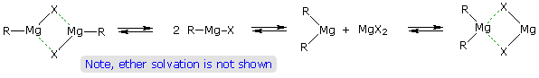
Since magnesium halides are moderate Lewis acids, their presence in solution may influence the outcome of certain chemical reactions. One example of this perturbation is the reaction of cyclohexene oxide with methylmagnesium bromide, as shown on the right in the following equation. Magnesium bromide rearranges the epoxide to cyclopentanecarbaldehyde, which then adds the Grignard reagent in the expected manner. Dimethylmagnesium, on the other hand, simply adds to the epoxide by opening the strained ring. Methylithium adds in a similar fashion. Pure dialkylmagnesium reagents may be prepared by alternative routes (vida supra), or by removing the magnesium halide by precipitation (dioxane is added).
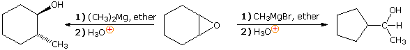
Alternative methods of preparing a wide variety of organometallic compounds generally involve an exchange reaction in which a given metal is either moved to a new location or replaced by a new metal, which may include B, Al, Ti, V, Fe, Ni, Cu, Mo, Ru, Pd, Sn, Pt, Hg & Pb. Five such exchange methods are outlined in the following table.
R_M + R'_H R_H + R'_M
This equilibrium favors the weaker C-H acid.
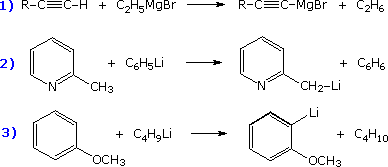
Equation 1 illustrates the most common method of converting terminal alkynes to Grignard reagents. The corresponding alkynylsodium reagents are similarly prepared by reaction with NaNH2. The other equations are examples of common lithiation reactions.
R_M + M' R_M' + M
This equilibrium favors the elemental metal having the less negative reduction potential.
R_M is often a dialkylmercury compound.
1) 3 (C6H5)2Hg + 2 Al ____> 2 (C6H5)3Al + 3 Hg
2) (C2H5)2Hg + Mg _____> 2 (C2H5)2Mg + Hg
Although highly toxic, dialkylmercury compounds are relatively stable and may be purified by distillation. This exchange is the best way of preparing halogen free organometallic compounds.
R_M + M'X R_M' + MX
This equilibrium favors the metal halide in which the metal has the greater negative reduction potential.
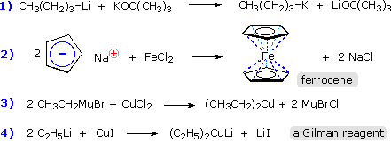
Sodium and potassium alkyls are often prepared by the exchange shown in equation 1. Many metallocenes similar to ferrocene have been made by procedure 2. The cadmium and copper reagents shown in equations 3 & 4 have reduced and modified reactivity compared with the magnesium and lithium reagents from which they are made.
R_M + R'_X R_X + R'_M
M is usually Li and X is generally Br or I.
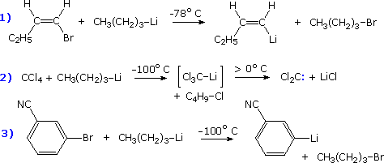
This is one of the best methods of preparing a wide range of organolithium reagents having well defined structures. The exchange usually occurs with retention of configuration. The low temperature serves to prevent competitive reactions, such as addition of butyl lithium to the nitrile group in reaction 3, or the decomposition of reactive compounds, such as Cl3CLi in reaction 2. Free radical intermediates have been detected.
R_M + R'_M' R_M' + R'_M
This equilibrium varies with the participating compounds.
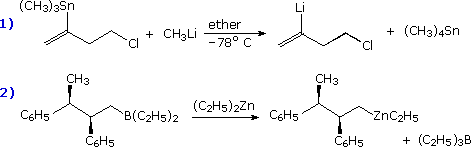
Metal-metal exchanges of this kind are less commonly employed than the previous techniques. They are particularly useful when boron and tin compounds must be converted to more reactive organometallic intermediates. In example 1 metal-metal exchange proved faster than metal-chlorine exchange.
Among the most useful reactions for the synthesis of complex molecules are those that achieve direct selective functionalization of a hydrocarbon moiety. Since organometallic reagents function as powerful nucleophiles, selective metal hydrogen exchange, Metalation, would represent a powerful first step to that end. The organometal species produced in this way could then react with a variety of common electrophilic reagents (e.g. alkyl halides, carbonyl compounds and halogens). However, with the exception of terminal alkynes such metalations are rare and usually non-specific. Thanks to the seminal work of V. Snieckus (University of Waterloo, Ontario, Canada) the ortho-lithiation of functionally substituted aromatic rings has proven to be a powerful technique for regioselective synthesis. The following equation illustrates this Directed ortho Metalation (DoM) reaction, where DMG refers to a directing metalation group and E+ is an electrophile.
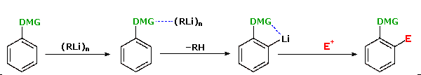
Electrophilic substitution of aromatic rings generally gives a mixture of ortho and para substitution products when an existing substituent activates the ring or meta products when the substituent is deactivating. In the case of anisole the methoxy substituent is a strongly activating group. Electrophilic iodination by the action of molecular iodine in the presence of sodium nitrate and acetic acid (a source of iodinium cation) gives a high yield of para-iodoanisole. By clicking once on the equation, iodination via directed ortho metalation of anisole will be shown. The ortho isomer is the sole product provided excess iodine is avoided. The strongly deactivating sulfonic acid substituent is easily converted to a DMG by amide formation. Clicking the above equation a second time shows the DoM of such an amide. Direct electrophilic substitution would normally occur at the meta position, so the action of the amide DMG is particularly noteworthy. A similar amide derivative of a carboxylic acid substituent may be used for DoM, as shown in the following diagram.
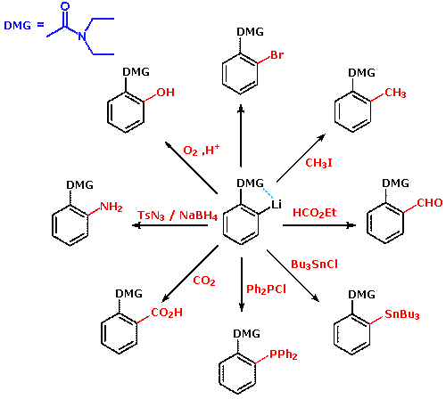
Many derivatives of common functional groups may serve as DMGs. Some examples will be displayed above by clicking on the diagram. Common oxygen protective groups, such as SEM (2-trimethylsilylethoxymethyl), have proven to be excellent DMGs. Two examples of this function are drawn below. The second will be shown by clicking on the diagram.
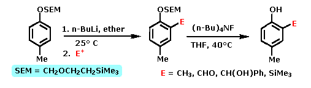
Reactions of organometallic compounds reflect the nucleophilic (and basic) character of the carbon atom bonded to the metal. Consequently, the most common reactions are electrophilic substitutions and additions to unsaturated electrophiles. The electropositive nature of the metal atom or group is an important factor influencing the reactivity of these reagents. Alkyllithium ( and sodium) compounds are the most reactive of the commonly used compounds in this class, having metal-carbon bonds that are roughly 30% ionic. The carbon-magnesium bond of Grignard reagents is about 20% ionic, and they have proven to be somewhat less reactive. Dialkylzinc reagents have significantly reduced reactivity, and fail to react with carbon dioxide, esters and many aldehydes and ketones. Alkylmercury and lead compounds are the least reactive commonly studied organometallics. The ionic character of the carbon-mercury bond is estimated to be less than 10%. Such compounds react with mineral acids, but not with water or alcohols.
Some examples of the reactions of organometallic compounds with a variety of electrophilic functions are provided in the following three-part chart. The first page of examples show three kinds of electrophilic substitution reactions. The proton is the most common electrophile, and it is well known that reactive organometallic compounds (alkyllithium and Grignard reagents) do not tolerate acidic functional groups such as OH and NH. Ethyl acetoacetate (example 3) has two carbonyl functions which are potential addition sites, but the acidity of the doubly activated methylene group dominates the reactivity. Dialkylmercury compounds are much less reactive, and can be mixed with water or alcohol without change. Examples of halogenation and alkylation are provided in groups II and III. Some alkylation reactions involve free radical intermediates, but most (as shown) may be regarded as modified SN2 reactions in which metal coordination to the leaving halide (or sulfate) plays an important role.
To see the second and third pages of examples it is necessary to click on the diagram. The pages of examples will cycle with each click.
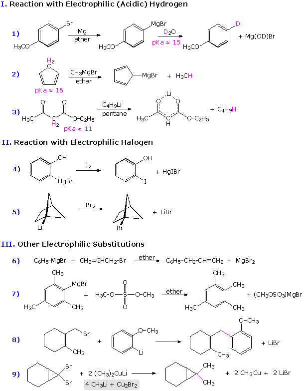
Organometallic compounds having significant carbanion-like behavior are subject to oxidation (electron abstraction) by suitable cations. Two such oxidative couplings are shown in part IV. These serve as a reminder that oxidative conditions should be avoided when using reactive organometallic compounds. The formation of peroxide derivatives on exposure to oxygen presumably takes place by a similar radical coupling ( R• + O2•(–) ).
The most important and widely used reaction of of organometallic reagents is undoubtedly their addition to carbonyl and nitrile functional groups. Six examples are given in part V, the new C-C bond is colored magenta in each case. Aldehydes, other than formaldehyde, add Grignard and alkyllithium reagents to form 2º-alcohols. Ketones and esters react to give 3º-alcohols (examples 12 & 14). Similar reactions with nitriles (example 16) usually lead to ketones (after hydrolysis), since the intermediate C=N salt is less reactive than a carbonyl group. By working at low temperature, normally incompatible groups may survive in the product. This approach is illustrated in example 15, where 3-bromobenzonitrile is lithiated by a low temperature metal-halogen exchange, and this potentially unstable species immediately reacts with an anhydride to produce a ketone. Similarly selective reactions may be accomplished by using less reactive organometallic reagents, as in examples 13 & 17. Zinc and cadmium compounds are relatively unreactive with esters, as the outcome demonstrates.
The examples in group VI on the third page illustrate addition reactions to epoxides, carbon dioxide and carbon double bonds activated by conjugation with carbonyl groups. Nucleophilic addition reactions to α,β-unsaturated ketones may take place in two ways: 1,2-addition to the carbonyl function, or 1,4-conjugate addition to the enone. Simple alkyllithium reagents usually add in the 1,2-fashion, but the presence of cuprous salts or the use of Gilman's reagent directs addition in the 1,4-fashion (examples 20 & 21). When the carbonyl function of a ketone is sterically hindered, branched Grignard reagents may react by a hydride transfer mechanism to give a 2º-alcohol corresponding to the ketone (reaction 22). Reductions of this kind are often conducted with aluminum alkoxide salts, and are called Meerwein-Ponndorf-Verley reductions.
Finally, examples 23 & 24 on the third page show facile rearrangements that allyl and homoallyl Grignard reagents are known to undergo. The 2-butenyl-1- magnesium bromide (crotyl Grignard) on the left in equation 23 is in equilibrium with a smaller amount of its 1-butenyl-3-magnesium bromide isomer. Although the crotyl form predominates, it usually reacts by the cyclic transition state shown in brackets to give methallyl addition products. It should also be noted that, regardless of equilibration rates, the carbon-metal bonds in allylic Grignard and zinc reagents are localized in the manner of conventional σ-bonds; whereas the corresponding sodium, potassium and lithium reagents exhibit significant metal bonding to both ends of the allyl moiety in a π-like fashion.
The successful preparation of organometallic reagents from dihalides is dependent on the number of carbon atoms separating the halogen groups. For example, 1,4-dibromobutane and para-dibromobenzene react with excess magnesium in ether to generate di-Grignard reagents that may be used in the same manner as any simple Grignard reagent. In the case of para-chlorobromobenzene, the greater reactivity of bromine permits the preparation of para-chlorophenylmagnesium bromide in good yield. When the halogens are separated by only three carbon atoms, three-membered ring formation is common, as in the preparation of cyclopropane from 1,3-dichloropropane by treatment with zinc dust and sodium iodide. It is not surprising then to find that vicinal-dihalides undergo rapid beta-elimination to alkene products when treated with magnesium or zinc. Indeed, this is a useful elimination procedure for vicinal dihalides and related compounds. Reaction of magnesium or zinc with small amounts of 1,2-dibromoethane has been used to activate the metal surface for subsequent reaction with a more sluggish alkyl halide. Ethylene gas is the only organic product formed in this activation stage. In contrast, geminal dihalides, such as methylene iodide and bromide, have proven to form some uniquely useful organometallic reagents, a few of which are described below. When zinc metal is used, it must be activated, often by forming a zinc-copper couple or alloy immediately prior to its use.
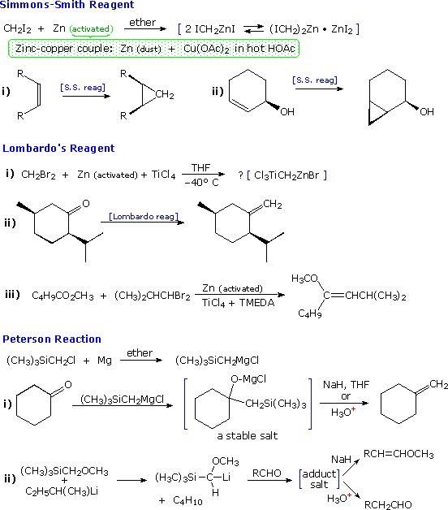
The Simmons-Smith reagent, first prepared by DuPont chemists, is perhaps the best known of these "carbenoid" reagents (so named because metal-halogen loss would result in a carbene species). This ether soluble substance is thought to be an equilibrium mixture of the compounds written in the blue brackets. The chief use of this reagent is the conversion of alkenes to cyclopropanes by CH2 addition. The addition is stereospecific and suprafacial, so cis alkenes give cis-substituted cyclopropanes, as shown. Neighboring hydroxyl groups appear to coordinate with the reagent, directing the addition to the nearest face of the double bond (example ii) Lombardo's reagent, and several similar organotitanium compounds (e.g. Tebbe's reagent) act to methylenate carbonyl groups. In this sense they mimic Wittig reagents. Because they are less basic than the alkylidenenephosphorane Wittig reagents, Lombardo reagents do not epimerize sensitive ketones, such as used in reaction (ii). Also, enol ether products may be obtained from esters (example (iii). Another Wittig-like reagent, trimethylsilylmethylmagnesium chloride, has been described by Peterson. The initial adduct of this Grignard reagent is a stable salt, which may eliminated by treatment with acid or by exchange of magnesium with an alkali metal cation. The elimination of (CH3)3SiOZ (where Z is H or Na) is often stereospecific, being anti with acid and syn with NaH.
Other geminally substituted organometallic reagents have proven useful for the addition of carbinol or methylamino groups. The following equations illustrate two such applications. The necessary functionalized organolithium reagents are prepared by metal-metal exchange with corresponding trialkyltin compounds, which in turn are made by way of lithiated tin reagents (shown in the light blue box). By converting these lithium reagents to Gilman (cuprate) reagents, conjugate addition to enones may be accomplished.
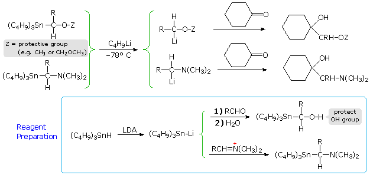
A century of experience clearly establishes the usefulness of organolithium and Grignard reagents in the construction of carbon-carbon bonds. However, the reactivity of these powerful nucleophiles limits the functional groups that are tolerated in their preparation and use. Thus the presence of hydroxyl, amino, carbonyl, nitro or nitrile functions in the halide precursor of a desired lithium or magnesium reagent presents a serious compatibility problem, as noted earlier for 5-bromo-1-pentanol. One way of circumventing this difficulty is to effect a metal-halogen exchange at low temperature (example 15 above), but this was not developed into a generally useful technique until recently. An alternative strategy is to first prepare a relatively unreactive organometallic reagent which incorporates all the desired functional groups, and then to effect a metal-metal exchange to form a reactive analog in the presence of an electrophilic co-reactant. Zinc compounds have proven particularly useful for this purpose, and new methods for preparing and using them have been developed by P. Knochel, presently at Munich. The following equations illustrate three such applications. In the first, metal-halogen exchange between an alkyl iodide and diethylzinc (easily prepared and purified) is driven to completion by removing ethyl iodide and other volatiles under vacuum. The resulting dialkylzinc reagent tolerates some functional substituents (e.g. esters and nitriles), and undergoes carbonyl addition reactions with aldehydes and ketones provided a titanium(IV) catalyst is present. These zinc compounds may be converted to a mixed copper(I) species by treatment with CuCN + 2 LiCl. The second equation describes an improved procedure for preparing alkylzinc compounds directly from commercial zinc dust and alkyl halides, sulfonates or phosphates (note the addition of alkali metal iodide salts, and the use of novel 3º-amide solvents). Finally, equation 3 shows an important new method for converting trialkylboranes to their zinc analogs by a stereospecific metal-metal exchange.
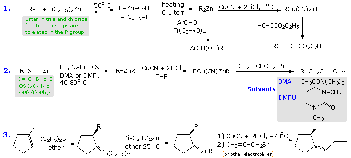
By clicking on the above diagram three specific examples of reactions of alkylzinc compounds with electrophilic partners will appear. In all the examples functional groups are present in one or both of the reactants. The first example is a conjugate addition of the mixed zinc-copper reagent to an unsaturated nitro compound. In this case, the solvent (DME) is 1,2-dimethoxyethane. Equation # (iii) is a typical coupling reaction of these Zn-Cu reagents, in this case from a tosylate, with a vinyl (or aryl) iodide. Finally, the allylzinc reagent in equation #(ii) rearranges in the course of the coupling.
This brief discussion of functionalized organometallic reagents would not be complete without illustrating the synthetic utility of low temperature magnesium-halogen exchange reactions involving simple Grignard reagents. Equations (4) and (5), shown in the following diagram, are characteristic of many examples provided by the Knochel group. In the first, the metal exchange takes place exclusively with the aryl iodine in the presence of a benzylic chloride and an ester. Subsequent addition to an aldehyde occurs on warming. The second example is more complex, and over a sequence of half a dozen steps, both aryl iodides are converted to Grignard reagents which are then converted to copper reagents prior to coupling reactions with alkyl halides.
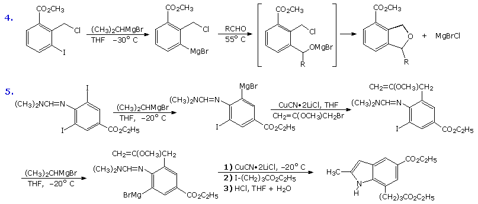
With the exception of zinc and copper, the metal components of the organometallic reagents we have discussed above have been main-group metals. In most cases the reagents were used in stoichiometric quantities, and many had well defined constitutions, although oligomeric clustering was solvent dependent. Over the past fifty years, transition metals and their complexes have been demonstrated to influence the course of organic reactions in unique and useful ways. The empty and partially occupied d-orbitals that characterize most of these metals enable them to bond reversibly to many functional groups, and thus activate many difficult or previously unobserved reactions, often in catalytic amounts. Because their d-orbitals are fully occupied, zinc, cadmium and mercury usually behave like main-group metals. A full periodic table will be displayed by Clicking Here, the transition metals are colored pink. It is useful to use the stable eighteen-electron valence shell of the noble gas element that closes each transition element period as a reference when discussing the chemistry of transition metal complexes. Here the valence shell refers to a combination of s, p and d orbitals, the occupancy of which depends on the electron configuration of the element or ion. The following table lists the valence electrons of transition elements in periods 4, 5 and 6, without reference to orbital occupancy. In their higher oxidation states (usually I, II or III) these metals have proportionately fewer valence electrons. When compounds of these metals form stable complexes with Lewis base ligands, the coordinate sharing of electron pairs on the ligand molecules may produce a coordinatively saturated (18-electron) or an unsaturated (16, 14 or fewer electron) valence shell configuration.
Period
When discussing the chemistry of transition metal complexes, it is customary to determine the oxidation state of the metal and the number of valence shell electrons achieved by the covalent and coordinate bonding. For example, in chromium hexacarbonyl, Cr(CO)6, the metal is in its zero oxidation state and has a filled valence shell (6 + 12 = 18 electrons). In the case of the anti-tumor agent cis-platin, PtCl2(NH3)2, the metal has an oxidation state of (II) and 16 valence electrons. As a first step in the analysis of transition metal complexes, it is necessary to distinguish covalently bonded substituents from coordinatively bonded ligands. The following table illustrates this distinction. The covalently bonded substituents in the left column are assumed to contribute a single electron to a covalent bond, the other electron of the bonding pair coming from the metal. Each substituent of this kind increases the oxidation state of the metal by one, and adds an electron to the valence shell. Multiple bonds to elements such as C, N & O may be formed and are treated additively. Thus chromyl chloride. CrO2Cl2, is a Cr(VI) compound with 12 valence electrons (there are two Cr=O bonds). The second column lists some coordinating ligands, each of which adds two electrons to the valence shell but does not change the oxidation state of the metal. Six such ligands are present in Cr(CO)6, and the two NH3 ligands in PtCl2(NH3)2 serve a similar role. Phosphines of various kinds and carbon monoxide are among the most commonly used ligands in transition metal chemistry.
Covalent Groups1-electron donors
Coordinate Ligands2-electron donors
Combination Ligandsn-electron donors
F, Cl, Br, I H (hydride) R- or Ar- RCO- (acyl) RO- or RCO2- R2N-
R3P: (phosphine)R3N:R2OCOR2C=CR2RC≡CR
allyl
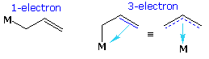
cyclopentadienyl
The third column in the above table lists two examples of complex substituent ligands that combine the properties of both groups on the left. The allyl group may function as a 1-electron covalent substituent, as the left-most formula shows, but the double bond may also provide an additional 2-electron contribution if its structure permits. The presence of this group increases the oxidation state of the metal by one, and may add one or three electrons to the valence shell count. The cyclopentadienyl moiety, abbreviated as Cp, is a very common ligand in organometallic chemistry. Here, a single covalent bond buttressed by electron pair coordination from the two double bonds may be imagined. The delocalization of bonding electrons is often depicted by dashed lines (drawing on the right).
Structural investigations of transition metal compounds have identified several configurational classes which are characteristic of the metal and the number and nature of the substituent ligands. Four of the most commonly encountered structures are shown in the following diagram, and it should be understood that these idealized configurations may be somewhat distorted in an actual compound. By successive clicking on the diagram, two additional displays of known compounds will be presented along with a valence electron count and the oxidation state of the metal.
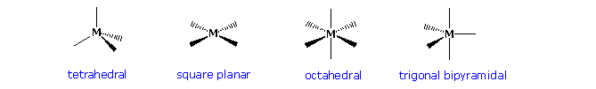
Models of characteristic square planar, octahedral and trigonal bipyramidal complexes may be examined by clicking the button.
Among the most remarkable transition metal compounds are their pi-complexes with annulenes, including the cyclopentadienyl ligand described above. Three examples are shown on the right. The annulene pi-orbitals overlap with unoccupied hybrid orbitals of the metal. This coordinate bonding, together with the electron pairs donated by the carbon monoxide ligands, allows each metal to achieve an 18 electron valence shell (characteristic of the inert gas krypton).
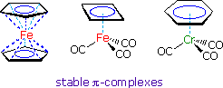
The central compound illustrates the stabilizing effect of pi-complexation on an inherently unstable annulene. The antiaromatic character of 1,3-cyclobutadiene has been noted, and the iron tricarbonyl complex drawn here permits this extremely reactive hydrocarbon to be stored and used as required. The Fe(0) atom has eight valence electrons, and the cyclobutadiene and CO ligands provide ten more by coordinate bonding. Note that, for simplicity, the ring-to-metal coordinate bonding is designated by a single dashed line rather than multiple lines as in ferrocene. Cyclobutadiene is released from the complex by mild oxidation with ceric ammonium nitrate, and immediately reacts with other compounds or itself. Finally, benzene and related arenes form stable complexes with Cr(0), either as shown or as a sandwich. The chromium unit is strongly electron withdrawing, making the benzene ring susceptible to nucleophilic substitution. Because of its size, the Cr(CO)3 unit serves to direct benzylic substitution reactions to the opposite face of the ring. This robust complex is easily dissociated by treatment with iodine or by other mild oxidizing agents.
Transition metal compounds would have limited interest and importance if they did not undergo chemical reactions. A full treatment of this subject is not feasible here, but a few of the more common and useful transformations are outlined in the following diagram. Oxidative addition occurs when a metal complex inserts itself into a covalent single, double or triple bond. Because two new metal centered covalent bonds are created, the oxidation state of the metal increases by + 2. Common Y-Z reactants include H2, X2, C-X and C=C. Reductive elimination is the reverse of oxidative addition, and the direction taken by a given reaction mixture may be influenced by ligand number and size as well as the oxidation state of the metal. Complementary insertion and elimination reactions are shown below the horizontal dividing line. These may take two forms, as illustrated, depending again on the nature of the complex. When an alkyl group having beta-hydrogens is covalently bonded to a metal, beta-elimination commonly occurs. By successive clicking on the diagram, two pages of examples will be displayed. The first two examples of oxidative addition are thought to proceed by an initial coordinate complex (sigma for H2 & pi for the alkyne), followed by a concerted addition to the observed product. Example # 3, on the other hand, takes place by a two-step mechanism. The reductive elimination in equation # 4 is essentially the reverse of reaction # 1. Equation # 5 shows an interesting elimination of ethane from two metal alkyl methyl substituents.
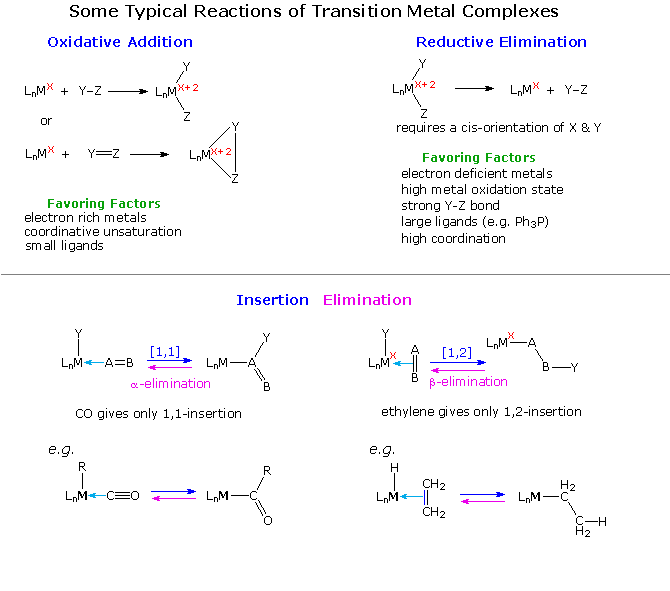
Several types of insertion-elimination reactions are shown on the third page of this display. Equation # 1 describes a sequence of double bond insertion (intramolecular) followed by a beta-elimination. The oxidation state of the metal remains unchanged throughout the process. Equations 2 & 3 show reversible [1.1] insertion / alpha-elimination reactions. The alkyl group shifts with retention of configuration. Excess CO, or addition of a phosphine ligand, forces the equilibrium toward the insertion product. Removal of a ligand tends to favor elimination, as in equation # 4. Here, the alpha-elimination to a metal-carbene proceeds with oxidation of the metal. Finally, the last example illustrates an oxidative coupling reaction, similar to oxidative addition.
The effectiveness of many transition metal compounds as catalysts for reactions comes from the facility of these metals to complex reversibly with a variety of functional groups. In the case of double and triple bonds such complexation involves electron sharing between overlapping carbon-carbon pi-orbitals and certain d-orbitals of the metal. As illustrated in the following diagram, the electron pair of the pi-orbital may be shared with an empty d-orbital to form a sigma-like bond (light blue arrow). This leaves the double bond function electron deficient, a condition that may be remedied by the sharing of a d-electron pair with the empty antibonding-pi-orbital (a pi-like backbonding). A strong sigma bond is complemented by strong pi-backbonding, which essentially reduces the carbon-carbon bond order to one (from two). The carbon atoms must then rehybridize and the resulting complex resembles a three-membered ring incorporating the metal atom (a metallocycle). If the sigma bond is weak, backbonding will also be weak, and the structure of the double bond component of the complex will not be significantly perturbed.
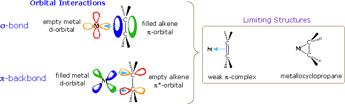
An instructive example of transition metal activation of carbon-carbon double bonds is found in the homogeneous hydrogenation catalyst known as Wilkinson's catalyst. We noted earlier that finely divided transition metals such as Pt, Pd & Ni, catalyze the addition of hydrogen to double and triple bonds. Heterogeneous reactions of this kind take place on surfaces that are often poorly characterized, so Wilkinson's discovery that a soluble rhodium complex, ClRh[P(C6H5)3]3, reduced alkenes to alkanes (cleanly and stereospecifically) provided an opportunity to study the structure and behavior of intermediate species. The information thus obtained has resulted in the following general mechanism for the hydrogenation of alkenes, and for the decarbonylation of aldehydes that takes place by action of the same catalyst.
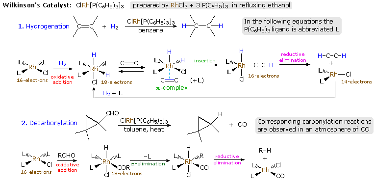
Models of two Wilkinson species may be examined by clicking the button.
Several important and general reactions are illustrated in the above mechanism. A coordinatively saturated rhodium atom would have 18 valence shell electrons. Reversible loss of one or more ligand units generates reactive 16 and 14 electron complexes which play a role in the overall transformation. Oxidative addition is a common process for converting a coordinatively unsaturated metal to a saturated complex. The addition of hydrogen in the first step is such a case, the "oxidative" adjective referring to the fact that Rh(I) is oxidized to Rh(III) in the event. The alkene being reduced replaces one of the ligands (L) in the second step, and this pi-complex rearranges by insertion of Rh-H into the C=C (an intramolecular analog of B-H addition to C=C). The resulting 16-electron complex then undergoes a reductive elimination of C-H, either before or after a new ligand molecule binds to rhodium. In this elimination the new C-H bond is formed with retention of configuration, and Rh(III) is reduced back to Rh(I). Addition of hydrogen then regenerates the catalyst. Similar ruthenium and iridium catalysts have been developed, and when chiral ligands are used, enantioselective addition of hydrogen is observed. The decarbonylation reaction proceeds in a similar manner, with oxidative addition of OC-H being followed by rearrangement and reductive elimination of R-H. Carbon monoxide is a common transition metal ligand, and reactions conducted in the presence of excess CO often lead to products incorporating a new carbonyl function.
Transition metal catalysts have been applied to many functional group transformations, including hydrogenation (Wilkinson's catalyst), asymmetric epoxidation (Sharpless & Jacobsen catalysts) and asymmetric dihydroxylation (Sharpless catalyst). In the following discussion, however, we shall focus on several new and very useful applications of these catalysts to reactions in which carbon-carbon bonds are formed. Nickel catalysts have been demonstrated to be effective in coupling allylic halides to each other and to various aryl, vinyl and alkyl halides. An intramolecular example of this is shown in the following example.
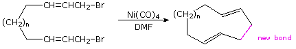
Because nickel carbonyl is an extremely toxic gas, alternative nickel catalysts have been examined with variable results. Palladium lies just below nickel in the periodic table and, although it is expensive, a large body of useful applications of this metal have been reported. Some of these are outlined in the following diagram. The Trost, Heck, Negishi, Stille and Suzuki reactions have seen widespread use in the synthesis of complex molecules, and additional examples of each may be examined by clicking on one of the blue titles (2, 3, 4 or 5) in the diagram. Clicking on an empty section of the diagram will return the viewer to the original display. The 2010 Nobel Prize in chemistry was jointly awarded to Heck, Negishi and Suzuki for their work in developing these coupling reactions. A summary of this chemistry will be displayed by Clicking Here.
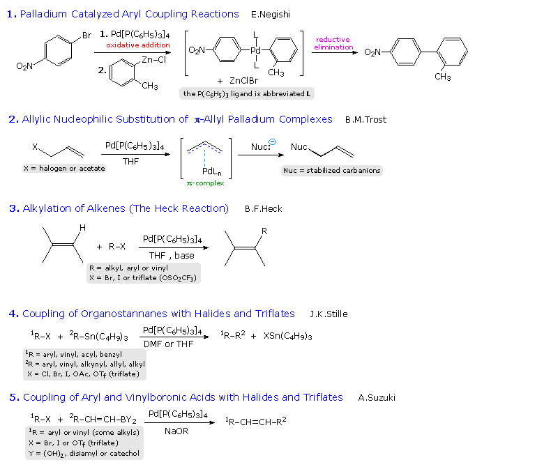
In the allylic substitution examples (# 2), the top equation illustrates Trost's initial discovery of allylic substitution for simple alkenes. This reaction required stoichiometric amounts of the expensive palladium reagent. To make this useful reaction catalytic in palladium Trost used substituted alkenes bearing an ester leaving group at the allylic site. Examples are given below the horizontal gray line. Equation # 4 shows a different kind of palladium catalyzed reaction, in which two addition steps are followed by a reductive elimination that regenerates the catalytic species.
Another important transition metal catalyzed transformation is the cyclic trimerization of alkynes to form substituted benzenes by a formal [2+2+2] cycloaddition. This process was first demonstrated over fifty years ago by the German chemist W. Reppe. Germany had few petroleum resources and lots of coal, from which acetylene can be made, so this offered an alternative source of liquid hydrocarbon fuel for their war machine. The Reppe work is outlined in equation # 1 in the following diagram. The best nickel catalyst was Ni(CO)4, a toxic gas, and recent work by K.P.C. Vollhardt (Berkeley) has shown that dicarbonylcyclopentadienylcobalt provides a safer and more selective catalyst for this very useful synthesis (reaction # 2 ). If a nitrile function is substituted for the third alkyne component, substituted pyridines are formed. A cobalt carbonyl complex also serves to catalyze a useful synthesis of cyclopentenones, known as the Pauson-Khand reaction (reaction # 3 ).
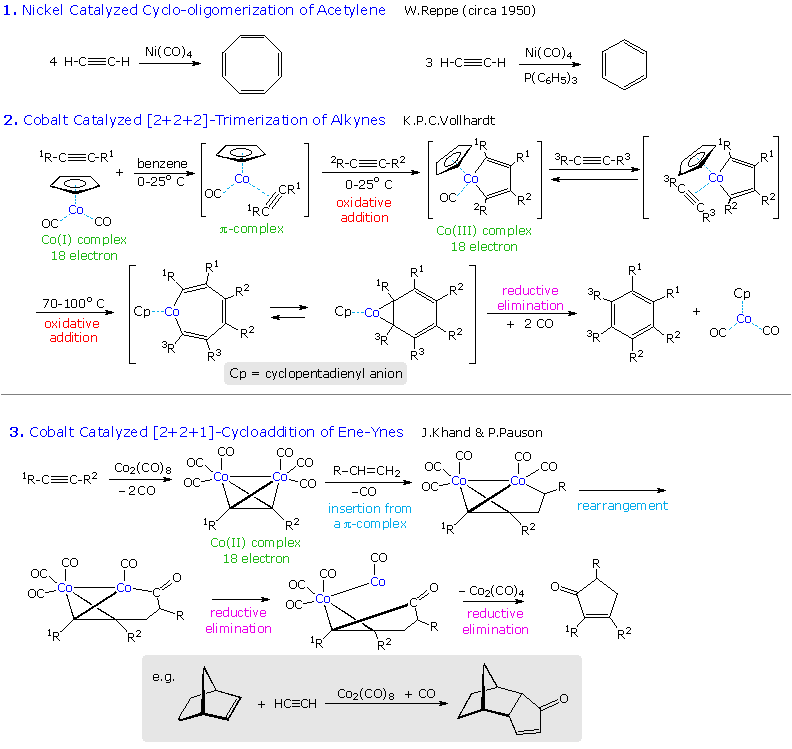
To view examples of these reactions applied to synthetic targets Click on the Diagram. As for many other carbon-carbon bond forming reactions, intramolecular applications are especially useful for constructing polycyclic structures, and are often effected in sequence with other cyclizations. In the second example, a double bond replaces one of the triple bonds in the cyclotrimerization reaction. The product in such cases is usually a Co(I) complex of a 1,3-cyclohexadiene, which may be oxidatively decomposed to the diene itself. The third example is from Schreiber's synthesis of epoxydictymene,a diterpene. Here, a hexacarbonyldicobalt complex of an alkyne serves as a neighboring group during the acid-catalyzed opening of the cyclic acetal, and then functions as a reactant in the Pauson-Khand reaction. Elimination of the 1º-alcohol is achieved by way of a selenoxide derivative.
Transition metal complexes incorporating a formal metal-carbon double bond are termed alkylidene or carbene complexes. Two general classes are recognized, Schrock alkylidenes and Fischer carbenes. General structures for these reactive compounds are shown below, together with some of their characteristics.
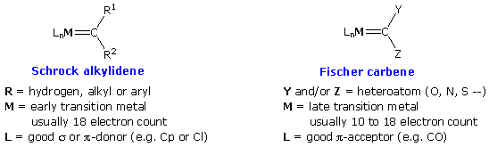
The preparation of typical alkylidene complexes of both types are provided in the following diagram, beginning with Schrock alkylidenes. Clicking on the diagram will display the Fischer carbene examples (A, B & C), and these illustrations may be cycled by repeated clicking.
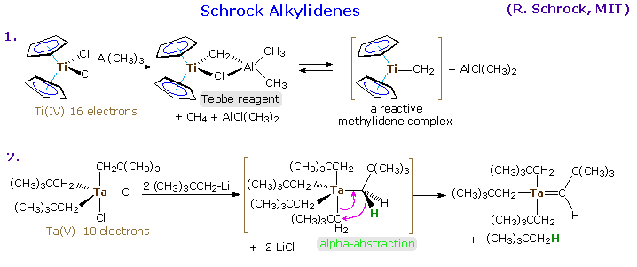
The properties and chemical behavior of Schrock and Fischer alkylidenes are substantially different, reflecting the metal-carbene bonding. As noted in the following diagram, the metal of a Schrock alkylidene is electrophilic, and is stabilized by electron donating ligands as well as backbonding from an occupied p-orbital of the carbon atom. This results in a strong metal-to-carbon double bond. The overall bonding in the complex leaves the carbon atom nucleophilic. Fischer carbenes have nearly opposite properties. The metal is electron rich, in part because of coordinate donation of an electron pair from the carbene carbon atom and CO ligands. Competition for the d-electrons of the metal takes place between electron withdrawing ligands, such as CO, and the empty p-orbital on carbon. This in turn, is stabilized by overlap with electron pairs on the heteroatom substituents (note the resonance structures). The resulting C=M multiple bond is weakened, and has a low barrier to rotation. Many of the chemical properties of Fischer carbenes are ester-like. Nucleophilic substitution takes place by way of a tetrahedral intermediate. Also, alpha-hydrogen atoms, e.g. (CO)5Cr=C(OCH3)CH3, have enhanced acidity (pKa = 12.3).
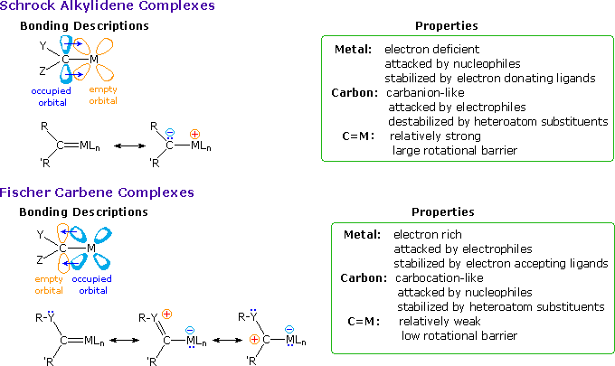
The alkylidene complexes described above undergo many interesting and synthetically useful reactions. Since the carbene moiety of a Fischer carbene has many of the characteristics of a carbonyl group, it is instructive to begin our survey with some ester-like transformations. The following diagram incorporates four pages of reactions that may be viewed by repetitive clicking on the diagram itself. The first page displays a few carbonyl-like reactions, which mimic organolithium addition to ketones (eq. # 1), ester amination (eq. # 2), the Wittig reaction (eq. # 3) and alpha-carbon alkylation (eq. # 4). Equation # 5 shows a sequence involving epoxide alkylation, followed by an intramolecular trans-esterification analog. The second page of reactions begins with an equation illustrating the reductive and oxidative removal of the metal component of the carbene. Note that DMSO also served as the oxidant in the Swern oxidation. The next two equations (# 7 & 8) demonstrate the dienophilic activation provided by a Fischer carbene. In most cases the carbene is a stronger activating group than the corresponding ester. The last equation shows an unusual case of thermal [2+2]-cycloaddition, which does not take place with the ester equivalent.
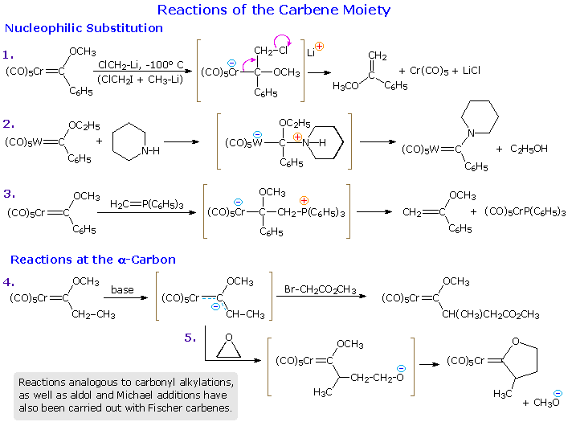
The third and fourth pages of reactions are unique to transition metal complexes of the Fischer and Schrock type. Metallocyclobutanes are believed to be key intermediates in these transformations, as shown. Reversible loss of CO ligands frees coordination sites and facilitates the oxidative addition of alkenes or alkynes. Since the cyclopropanation reaction on page three requires an electron withdrawing group on the alkene reactant, a bonding interaction of the electrophilic beta-carbon with the nucleophilic metal is expected. If the resulting metallocyclobutane is saturated, a reductive elimination gives a cyclopropane product. However, metallocyclobutenes derived from alkyne reactants undergo electrocyclic ring opening to a new alkylidene species. This in turn may react with other suitably located double bonds. Finally, a useful phenol synthesis known as the Dötz reaction is described on the fourth page. The unsaturated carbene supplies three carbon atoms and a carbon monoxide unit to the product phenol, and the alkyne reactant provides the remaining carbons. Oxidative addition produces a metallocyclobutene in the initial step, which is then followed by ring-opening, insertion and ring closure steps. The aromatic product is released from the stable cobalt tricarbonyl complex by treatment with mild oxidizing agents.
Most of the Fischer carbenes used in the reactions listed above are zero valent metal complexes. Although this is not a necessary condition {Cp(CO)2Fe=CH2 has been used for cycloproanation}, it is a common feature of many such reactions. Schrock alkylidenes generally incorporate metals having higher oxidation states, and because of the electrophilic nature of the metal their reactivity is significantly different. The following diagram shows two typical transformations of these alkylidene complexes. Olefination of carbonyl functions may be effected by Tebbe's reagent, which is the source of a Ti(IV) methylene complex. Unlike the Simmons-Smith reagent, it olefinates ester and amide carbonyl functions, as well as aldehydes and ketones. The most important reaction of these alkylidene complexes is undoubtedly olefin metathesis, a redistribution of the carbon groups joined by double (or triple) bonds. Applications of this reaction range from novel polymerizations to selective carbo and heterocyclic ring formation. Industrially important olefin metathesis operations are conventionally carried out with heterogeneous catalysts such as MoO3 on alumina. Following a suggestion by French chemist Y. Chauvin, T. Katz, R. Grubbs and R. Schrock have demonstrated convincingly that alkylidene or carbene complexes are necessary intermediates in this remarkable transformation, which proceeds by way of metallocyclobutane species. By clicking on the diagram a general mechanism for olefin metathesis will be displayed.
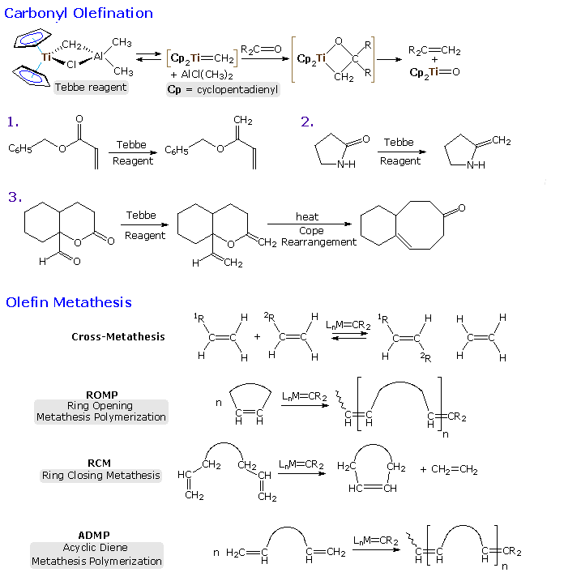
The mechanism shown at the top of the second illustration demonstrates the general form of olefin metathesis, but does not treat subtle factors such as regioselectivity and catalytic turnover. Many structural features of a metathesis catalyst may be changed and adjusted to suit the type of reaction desired. A ROMP catalyst, for example, should complex preferentially with the ring double bond, inducing ring cleavage and formation of a new catalytic site. For a RCM reaction, the catalyst should complex with a pendant acyclic double bond and release the endocyclic product once the intramolecular metathesis has been completed. Although heterogeneous metathesis catalysts generally incorporate high oxidation state transition metals, studies of discrete homogeneous complexes have shown this is not a necessary condition. Indeed, an early experiment by Katz used a Fischer carbene to effect metathesis. Much effort has been devoted to creating metathesis catalysts with improved binding and turnover characteristics to fit specific transformations. A few of the resulting catalytic complexes are shown in the bottom half of the second illustration. Schrock's molybdenum catalysts generally show high reactivity, but tend to be air sensitive and intolerant of some functional groups. The research group of R. Grubbs (Cal. Tech.) has produced a family of easily handled ruthenium catalysts that have proven effective and valuable tools in the field of synthetic organic chemistry.
By further clicking on the diagram examples of some applications of metathesis reactions will be presented in two additional pages. The ROMP reaction at the top of page 3 is typical of a large number of new polymerizations that are producing novel new materials. RCM reactions # 1 and 2 show two ring closures, and reaction # 3 demonstrates a double RCM in which an alkyne serves to transfer the metal carbene to a new location. A carbene olefination may serve to terminate metathesis, as in reaction # 4, but is not catalytic. The fourth and last page of illustrations shows three additional RCM applications that demonstrate the versatility and power of this technique. In the last example alkyne functions replace the more commonly used alkenes. It is fitting that Y. Chauvin, R. Grubbs and R. Schrock won the 2005 Nobel Prize in chemistry for their contributions to the development of this powerful reaction.
A more comprehensive treatment of transition metal catalysis may be found in the excellent organometallic hypertextbook prepared by Rob Toreki.
This page is the property of The Edvibe Team. Comments, questions and errors should be sent to contact@edvibe.co.ke. These pages are provided to the IOCD to assist in capacity building in chemical education. 05/05/2013